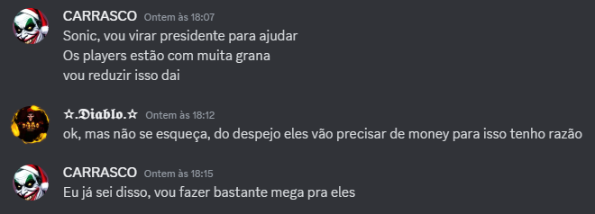

Revelações sigilosas indicam possíveis intenções de Carrasco antes da eleição
Mensagens revelam possíveis intenções de Carrasco para o futuro econômico do servidor.

(Print Vazada)
No dia 11 de janeiro de 2025, mensagens privadas vazadas indicaram uma conversa entre Carrasco e Sonic, donos do servidor Siga Bem Caminhoneiro. Na conversa, Carrasco mencionou a intenção de "reduzir" a quantidade de dinheiro circulando entre os jogadores, caso assumisse a presidência, e sugeriu que faria "bastante mega" para a comunidade como contrapartida.
A declaração gerou especulações e levantou dúvidas sobre as medidas que seriam adotadas para equilibrar a economia do servidor, especialmente porque a eleição para presidente ainda está cercada de incertezas.
A conversa também destacou um ponto mencionado por Diablo (Sonic), que alertou para a necessidade de dinheiro por parte dos jogadores, especialmente em situações de despejo. A troca de mensagens foi interpretada por alguns como um indício de que a gestão de Carrasco poderia trazer mudanças significativas na economia do servidor.